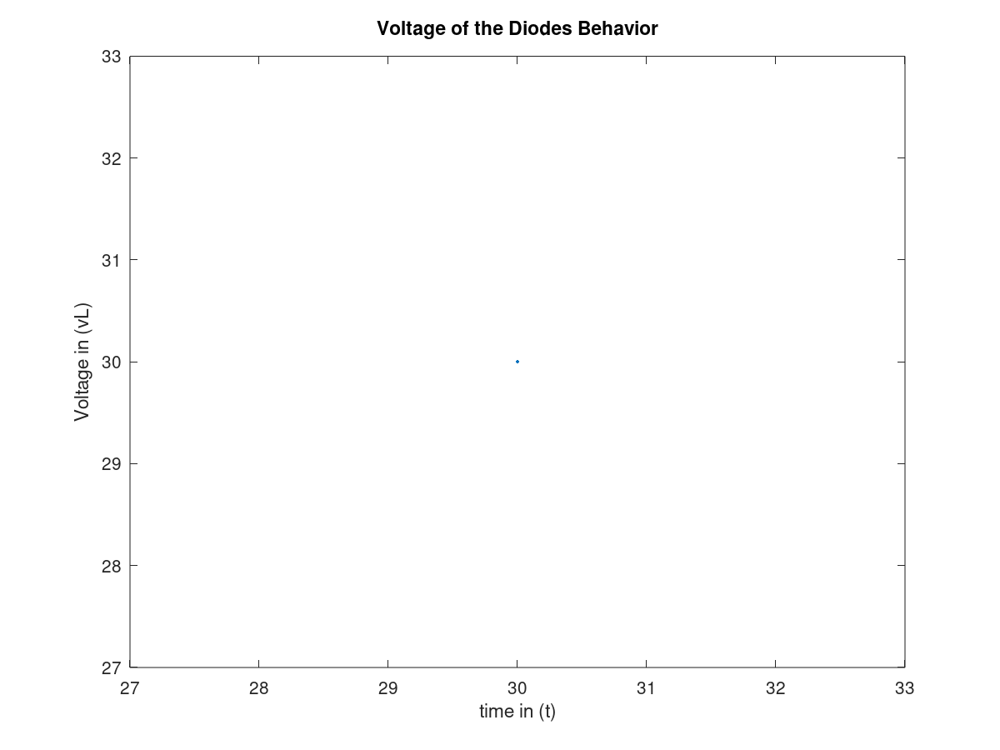

Authored by: Andres Choque Authored on: 10/20/2020
clear close all clc % Problem Presentation %{ Create a MATLAB function called fxy to evaluate the function f(x,y) defined as follows: f(x,y)= xy if x>=0 and y>=0 xy^2 if x>=0 and y<=0 x^2y if x<=0 and y>=0 x^2y^2 if x<0 and y<0 Test your function for all four cases. %} % Psuedocode % initialize variables % Create a function called fxy % Display results % Initialize variables % x = input('Enter your x value: '); % y = input('Enter your y value: '); % Create a function called fxy function output =f(x,y) if (x>=0 && y>=0) output = (x*y); elseif (x>=0 && y<=0) output = x*y^2; elseif (x<=0 && y>=0) output = x^2*y; elseif (x<0 && y<0) output = x^2*y^2; end f(x,y) end % Display results % tried at each case with 5 different ourputs
clear close all clc % Problem Presentation %{ a. An ideal diode blocks the flow of current in the direction opposite that of the diode's arrow symbol. It can be used to make a half-wave rectifier, shown as in figure P28a. For the ideal diode, the voltage vL across the load RL is given by: vL = Vs if Vs > 0 0 if Vs <= 0 suppose the supply voltage is Vs(t) = 3e^-t/3 sin(pi*t)V where time t is in seconds. Write a MATLAB program to plot the voltage vL versus t for 0 <= t <= 10. b. A more accurate model of the diode's behavior is given by the offset diode model, which accounts for the offset voltage inherent in semiconductor diodes. The offset model contains an ideal diode and a battery whose voltage equals the offset voltage. %} % Psuedocode % Initialize variables % Create a for loop % Display results % Initialize variables points = [1,28;7,18;8,16;17,2;22,10;27,8]; volume = [3,7,4,5,2,6]; min_cost = 1e5; % Create a for loop for x=1:30 for y=1:30 distance = sqrt((x-points(:,1)).^2+(y-points(:,2)).^2); cost(x,y) = 0.5*distance'*volume(:); if cost(x,y) min_cost = cost(x,y); x_min = x; y_min = y; end end end min = num2str(x_min); cost = num2str(min_cost); % Display results plot(x,y) xlabel('time in (t)') ylabel('Voltage in (vL)') title('Voltage of the Diodes Behavior') fprintf('The minimum coordinate value is: ') disp(min) fprintf('The cost is: ') disp(cost)
The minimum coordinate value is: 30 The cost is: 351.883
clear close all clc % Problem Presentation %{ One bank pays 5.5 percent annual interest, while a second bank pays 4.5 percent annual interest. Determine how much longer it will take to accumulate at least $50,000 in the second bank account if you deposit $1,000 initially and $1,000 at the end of the year. %} % Psuedocode % Initialize variables % Compute the while loops % Display results % Initialize variables bank_1 = 1000; bank_2 = 1000; years_1 = 0; years_2 = 0; % Compute the while loops while (bank_1 < 50000) bank_1 = bank_1 + (0.055*bank_1)+1000; years_1 = years_1 + 1; end while (bank_2 < 50000) bank_2 = bank_2 + (0.045*bank_2)+1000; years_2 = years_2 + 1; end diff = years_2 - years_1; % Display results fprintf('It will take this many years to accumulate 50000 in the first bank:\n') disp(num2str(years_1)) fprintf('It will take this many years to accumulate 50000 in the second bank:\n') disp(num2str(years_2)) fprintf('Therefore it takes two more years for bank 2 to accumulate the same ammount\n')
It will take this many years to accumulate 50000 in the first bank: 24 It will take this many years to accumulate 50000 in the second bank: 26 Therefore it takes two more years for bank 2 to accumulate the same ammount
clear close all clc % Problem Presentation %{ The following table gives the approximate values of the static coefficient of friction mu for various materials. Materials mu Metal on metal 0.20 Wood on wood 0.35 Metal on wood 0.40 Rubber on concrete 0.70 To start a weight W moving on a horizontal surface, you must push with a force F, where F = mu*W. Write a MATLAB program that uses the switch structure to compute the force F. The program should accept as input the value of W and the type of materials. %} % Psuedocode % Initialize variables % Create a switch structure % Display results % initialize variables % W = input('Enter the weight: '); % material = input('Enter the material: '); % Create a switch structure %function [F] = force(W, material) switch material case 'Metal on metal' F=0.2*W; case 'Wood on wood' F=0.35*W; case 'Metal on wood' F=0.4*W; case 'Rubber on concrete' F=0.7*W; otherwise 'Invalid input'; end %end % Display results % tried all the cases for each of the 5 Force outputs